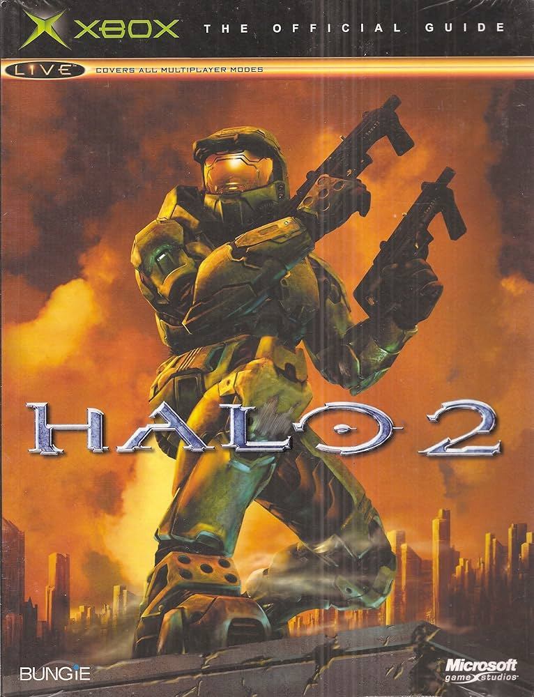

Halo Universe
 Halo 2 es un videojuego de disparos en primera persona (FPS) desarrollado por Bungie Studios junto a Microsoft Studios y es el segundo juego de Halo y sucesor directo del Halo: Combat Evolved. Salió al mercado el 9 de Noviembre de 2004 y es el juego más vendido en la consola Xbox. En el juego volveremos a meternos en la piel del Jefe Maestro, un super soldado Spartan y protagonista principal de la saga de videojuegos de este universo. Halo 2 únicamente cuenta con los modos de Campaña y Multijugador para su uso. Resumen:Un mes después de la destrucción del primer Halo, el Jefe Maestro es condecorado en la Tierra mientras que Thel 'Vadamee, un comandante Sangheili, es castigado por su fracaso y marcado con la Marca de la Vergüenza. Sin embargo, los Profetas le otorgan el título de Inquisidor para eliminar herejes. Mientras tanto, una flota del Covenant ataca la Tierra. Durante la invasión, el Jefe Maestro repele el ataque y persigue al Profeta del Pesar hasta un nuevo anillo de Halo. En la batalla, el Jefe mata a Pesar, pero es capturado por Gravemind, la inteligencia central del Flood, quien también atrapa al Inquisidor y les revela que los Profetas han mentido: activar Halo no lleva a la salvación, sino a la destrucción de toda vida. Paralelamente, los Brutes reemplazan a los Elites como guardianes de los Profetas, lo que desata una guerra civil dentro del Covenant. Mientras tanto, el Inquisidor se une a los Elites para derrocar a los Brutes. En la batalla final, Tartarus, líder de los Brutes, intenta forzar a Miranda Keyes a activar el anillo, pero el Inquisidor lo derrota y desactiva Halo. Sin embargo, 343 Guilty Spark advierte que todas las instalaciones han entrado en modo de espera, listas para ser activadas desde un lugar llamado el Arca. La historia termina con el Jefe Maestro llegando a la Tierra a bordo de una nave Forerunner, declarando: "Estoy terminando con esta lucha", dejando el final abierto para Halo 3. |